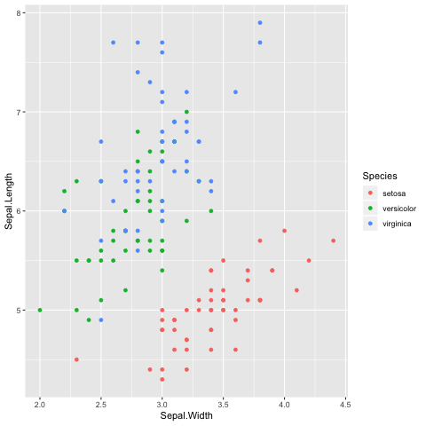
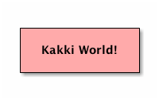

Shit head
Fort bort short hort.
Table of Contents
See the sitemap. Are you an idiot?
Table of Contents
1 It's not easy being green
But it's fun!
1.1 Why would you though?
Here's a link for you.
| Hello | I am an idiot | What? | Shit | Go Away |
|---|---|---|---|---|
| Shitty | Here some \(\LaTeX\) for you: \(x^2\) | Foo1 | Nope | hello |
2 Check out this heading
def foo(bar: Int): Option[Int] = { bar match { case x if x > 0 => Some(x) case _ => None } }
1: print("hi there")
1: library("ggplot2") 2: ggplot(iris, aes(x = Sepal.Width, y = Sepal.Length, color = Species)) + 3: geom_point()

spatt
+--------------+ |cPNK | | Kakki World! | | | +--------------+

See 2.
3 Bort is the bort
- Fart
- gas that comes out from your ass
- Ass
- shoulders for your ass
- Ass goblins of auschwitz
- scary monsters
Footnotes:
1
This is a silly footnote
cite:jacobson1997